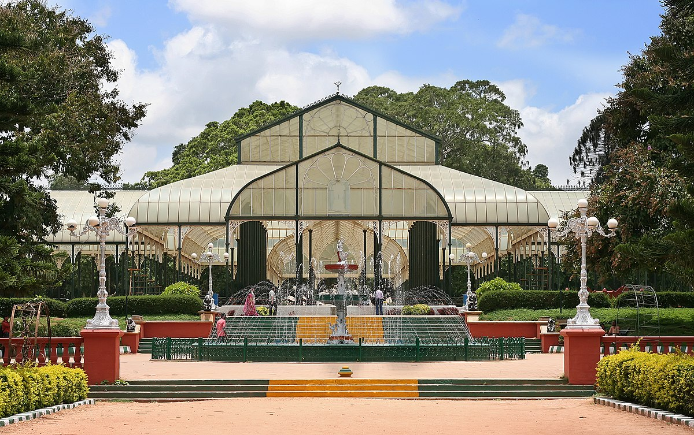
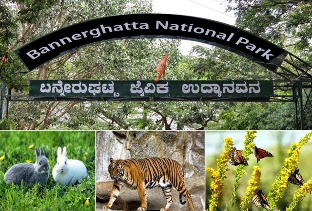
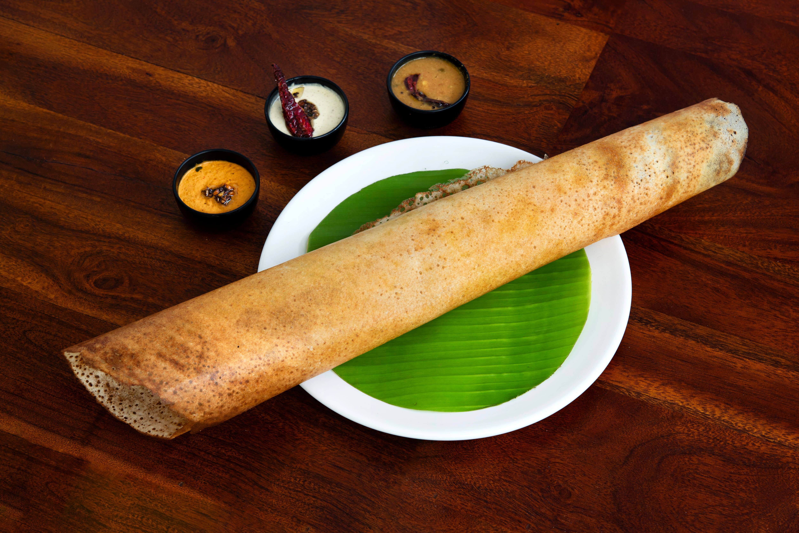
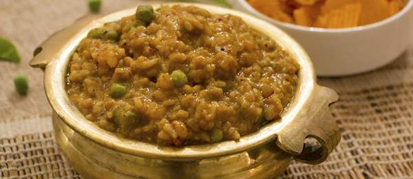
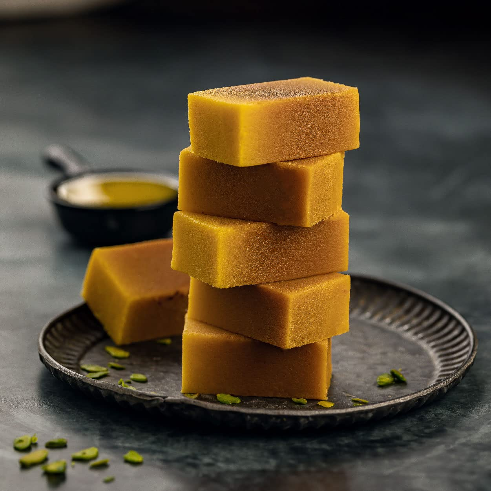

Top Places to Visit
- Lalbagh Botanical Garden: A famous botanical garden with a glasshouse. 
-
Bangalore Palace: Grand palace resembling Windsor Castle.

- Bannerghatta National Park: Wildlife park with safari experiences. 
Must-Try Dishes
- Masala Dosa: Rice crepe filled with spicy mashed potatoes. 
- Bisi Bele Bath: Spicy rice dish with lentils and vegetables. 
- Mysore Pak: Sweet made with ghee, sugar, and gram flour. 